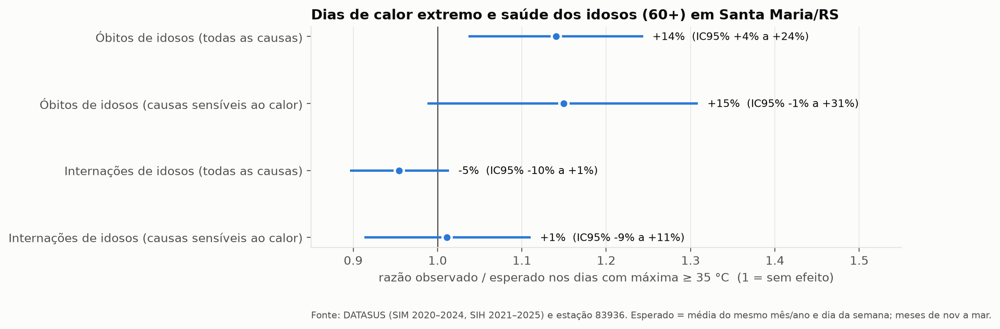
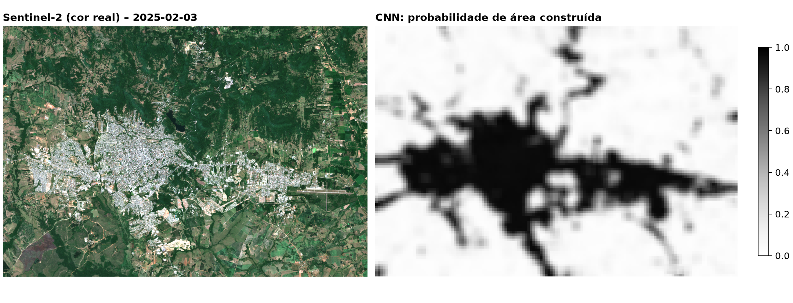
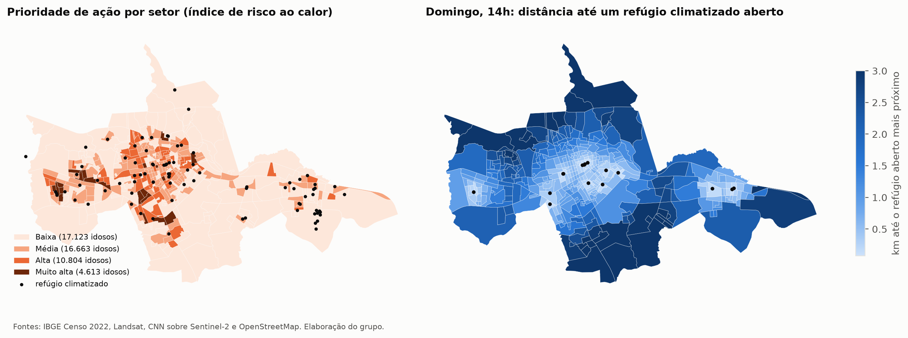
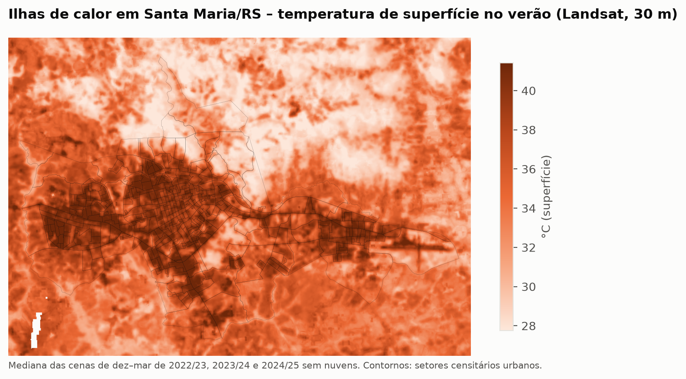
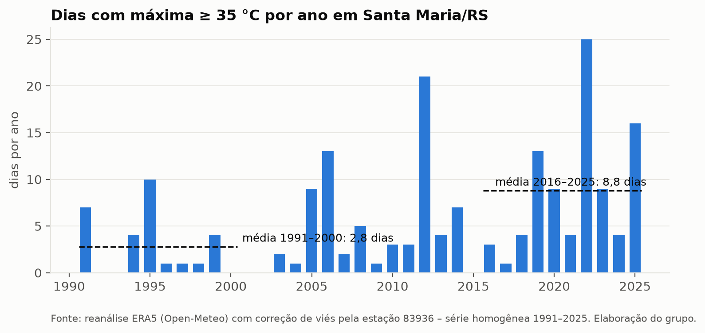
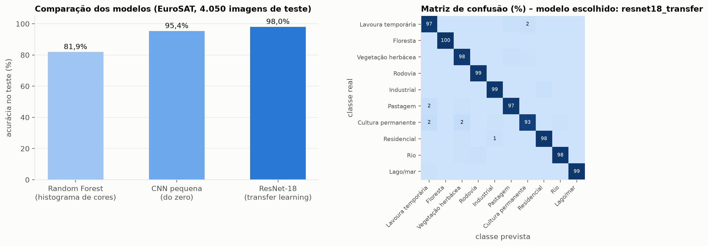

| Grupo | [NOME DO GRUPO] |
|---|---|
| Turma | [TURMA] |
| Integrantes | Kauan Maciel Forgiarini – RM 574005 Wagner Adriano de Souza Silva Junior – RM 569431 |
| Tutor(a) | [NOME DO TUTOR] |
| Data | Novembro de 2026 |
O Rio Grande do Sul é o estado mais envelhecido do Brasil: 14,1% da população tem 65 anos ou mais (IBGE, Censo 2022). Santa Maria, no centro do estado, registrou mais de 40 °C nos verões de 2020, 2022 e 2025. O calor extremo é especialmente perigoso para pessoas idosas, que sentem menos sede, regulam pior a temperatura do corpo e têm mais doenças cardiovasculares, respiratórias e renais. O risco não é igual em toda a cidade: bairros com menos árvores e mais asfalto formam ilhas de calor urbanas, fenômeno já documentado em Santa Maria por pesquisadores da UFSM.
Antes de propor a solução, medimos o problema com dados públicos reais:
| Pergunta | Evidência obtida pelo grupo | Fonte |
|---|---|---|
| O calor extremo está aumentando? | Dias com máxima ≥ 35 °C: média de 2,8/ano (1991–2000) → 8,8/ano (2016–2025). Máxima de verão +0,53 °C por década. | ERA5 corrigido pela estação 83936 |
| O calor faz mal aos idosos daqui? | Óbitos de pessoas 60+ 14% acima do esperado nos dias ≥ 35 °C (IC95% +4% a +24%; 49 óbitos além do esperado, 2020–2024), com efeito dose-resposta. Internações não aumentaram. | DATASUS (SIM, SIH) |
| A cidade esquenta por igual? | Não: a temperatura de superfície no verão varia ~9 °C entre bairros (32,8 °C a 42,1 °C) e acompanha a falta de vegetação (r = −0,78). | Landsat 8/9, 19 cenas |
| Onde estão os idosos em risco? | 15.417 dos 49.203 idosos urbanos (31%) vivem em setores de prioridade alta ou muito alta. | Censo 2022 + modelos |
| Há onde se refrescar? | 89% dos idosos têm um local climatizado aberto a até 800 m num dia útil às 14h, mas só 45% no domingo. | OpenStreetMap + recomendador |
Identificar onde o calor é mais perigoso para as pessoas idosas de Santa Maria e avisar a tempo quem pode protegê-las, recomendando ações concretas: o refúgio climático aberto e adequado mais próximo, cuidados baseados em orientações oficiais e prioridades de plantio de árvores.
| Camada | Componentes | Disciplinas aplicadas |
|---|---|---|
| Dados | Landsat 8/9, Sentinel-2, IBGE Censo 2022, estação 83936 + ERA5, DATASUS SIM/SIH, OpenStreetMap, EuroSAT | Python, análise exploratória |
| Inteligência | Análise calor × saúde; CNN de uso do solo; índice de risco + K-Means; dois sistemas de recomendação; assistente de IA generativa com ferramentas e RAG | Estatística, redes neurais, visão computacional, ML, recomendação, IA generativa/agentes |
| Campo (IoT) | ESP32 + DHT22 + LCD + LEDs + buzzer + botão "pedir ajuda" (Wokwi); MQTT sobre TLS com HMAC | Sensores e conectividade |
| Dados operacionais | SQLite / Oracle (13 tabelas, visão, 7 consultas); Amazon DynamoDB (leituras) | Banco de dados SQL e NoSQL |
| Nuvem | Amazon DynamoDB, Amazon SNS (envio de alertas), Amazon Bedrock (preparado) | Computação em nuvem |
| Interface | Painel Streamlit: mapa, indicadores, refúgio, alertas, chat, sensores | Aplicações interativas |
| Transversal | LGPD, TLS, HMAC, anti-replay, defesas OWASP Top 10 para LLM | Cibersegurança |
| Fonte | Uso | Tratamento | Limitações |
|---|---|---|---|
| Landsat 8/9 C2 L2 (USGS, via Planetary Computer) | Temperatura de superfície e NDVI | Cenas de dez–mar com <10% de nuvens, máscara QA_PIXEL, conversão para °C e refletância, mediana de 19 cenas | Mede a superfície às ~10h30, não o ar |
| IBGE Censo 2022 por setor | Idosos, alfabetização, densidade | 406 setores urbanos do distrito-sede | Sigilo em setores pequenos (imputação só para o índice) |
| Estação 83936 (Meteostat) + ERA5 (Open-Meteo) | Dias e ondas de calor | Correção de viés (+0,34 °C; r = 0,983); limiar p90 = 33,3 °C | ERA5 suaviza picos; Meteostat pode subestimar máximas |
| DATASUS SIM/SIH (RS) | Óbitos e internações de idosos | Leitor de .dbc próprio em Python; só contagens diárias agregadas | 2024/2025 ainda podem ser revisados |
| OpenStreetMap | 180 refúgios candidatos, 3 ILPIs | Categorização; horários típicos por categoria | Mapeamento colaborativo incompleto |
| EuroSAT RGB | Treino da CNN | 27.000 imagens, divisão estratificada 70/15/15 | Imagens europeias (diferença de domínio) |
Dados simulados, identificados como tal: leituras do ESP32 no Wokwi e o cadastro de 300 pessoas idosas e cuidadores, com nomes fictícios e telefones mascarados, distribuídos conforme o Censo.
Desenho estratificado no tempo: o número esperado de óbitos em cada dia é a média dos dias do mesmo mês/ano e do mesmo dia da semana, o que controla sazonalidade, tendência e efeito de fim de semana. A razão observado/esperado nos dias quentes estima o excesso de risco, e o IC95% vem de um bootstrap.
# src/analise/calor_saude.py (trecho)
d["estrato"] = d.data.dt.to_period("M").astype(str) + "-" + d.data.dt.day_of_week.astype(str)
d["esperado"] = d.groupby("estrato")[desfecho].transform("mean")
quente = d[d[marcador]] # dias com Tmax >= 35 °C
obs, esp = quente[desfecho].to_numpy(), quente["esperado"].to_numpy()
rr = obs.sum() / esp.sum() # razão de taxas
idx = rng.integers(0, len(obs), size=(n_boot, len(obs)))
boot = obs[idx].sum(axis=1) / esp[idx].sum(axis=1) # bootstrap -> IC95%

O NDVI mede vegetação, mas não distingue um telhado de um campo seco. Treinamos uma CNN para reconhecer padrões espaciais (quadras, ruas, telhados) e estimar a área construída de cada setor. Comparamos três abordagens e escolhemos o modelo pela validação, avaliando o teste uma única vez.
| Modelo | Acurácia (teste) | F1-macro | Tempo de treino (CPU) |
|---|---|---|---|
| Random Forest com histogramas de cor (baseline) | 81,9% | 0,809 | 34 s |
| CNN pequena treinada do zero (289 mil parâmetros) | 95,4% | 0,953 | 28 min |
| ResNet-18 com transfer learning (escolhida) | 98,0% | 0,980 | 15 min |
# src/ml/cnn_eurosat.py (trecho) – aumento de dados e escolha pela validação
def aumentar(x): # satélite não tem "lado de cima"
if torch.rand(1) < 0.5: x = x.flip(3)
if torch.rand(1) < 0.5: x = x.flip(2)
return torch.rot90(x, int(torch.randint(0, 4, (1,))), dims=(2, 3))
nome_final = max(("cnn_pequena", "resnet18_transfer"),
key=lambda k: resultados[k]["acuracia_validacao"])
A rede foi aplicada a uma imagem Sentinel-2 real de Santa Maria (03/02/2025) com janela deslizante (64×64 px, passo de 16 px). Na validação externa, sem rótulos locais, a fração construída estimada teve correlação de +0,72 com a temperatura de superfície e de −0,71 com o NDVI, medidas que a rede nunca viu.

Seguindo o referencial de risco climático do IPCC, o índice combina, por média geométrica: perigo (temperatura de superfície, área construída da CNN), exposição (número de idosos, % de 70+) e vulnerabilidade (pouca vegetação, idosos não alfabetizados, distância ao refúgio). O K-Means, com k escolhido pela silhueta (k = 3), descreve os perfis. O mais crítico, "Quente, envelhecido, pouco verde", reúne 201 setores e 28.740 idosos.

Para o cidadão: recomendação personalizada de refúgio climático, filtrada pelo que está aberto no dia e na hora, e pontuada por proximidade (decai com a distância que a pessoa consegue andar), adequação à necessidade (ar-condicionado, sombra ou atendimento) e frescor do entorno.
# src/ml/recomendacao.py (trecho) r = r[r["aberto_agora"] & (r["distancia_m"] <= 3 * perfil.mobilidade_m)] r["s_proximidade"] = np.exp(-r["distancia_m"] / perfil.mobilidade_m) r["s_adequacao"] = r["categoria"].map(ADEQUACAO[perfil.necessidade]) r["s_frescor"] = (1 - (r["lst_local"] - lst.min()) / (lst.max() - lst.min())).clip(0, 1) r["pontuacao"] = 0.45*r.s_proximidade + 0.35*r.s_adequacao + 0.20*r.s_frescor
Avaliação: o baseline ingênuo ("o ponto mais próximo") mandaria 49,7% dos idosos a um local fechado ou inadequado num dia útil, e 93,2% no domingo. Para o gestor: a relação observada entre NDVI e temperatura (−1,33 °C a cada +0,1 de NDVI; R² = 0,61) estima o resfriamento possível em cada setor, ponderado pelo número de idosos. Os 20 setores recomendados capturam 27% mais benefício do que o melhor critério simples ("mais idosos"), e o ranking se mantém estável quando as premissas variam (Kendall τ ≥ 0,64).
O nível do alerta é decidido por uma regra transparente e testada, não pela IA. Isso torna a decisão auditável e garante que o alerta saia mesmo sem IA:
# src/agente/alerta.py (trecho)
def definir_nivel(tmax_prevista, pessoa, sos=False):
if sos: return "emergencia" # botão PEDIR AJUDA do ESP32
alto_risco = pessoa.get("prioridade") in ("Alta", "Muito alta")
vulneravel = bool(pessoa.get("mora_sozinha")) or (2026 - pessoa["ano_nascimento"]) >= 80
if tmax_prevista >= 38 or (tmax_prevista >= 35 and alto_risco and vulneravel): return "emergencia"
if tmax_prevista >= 35 or (tmax_prevista >= LIMIAR_P90 and (alto_risco or vulneravel)): return "alerta"
if tmax_prevista >= LIMIAR_P90: return "atencao"
return None
Um modelo Claude (via Amazon Bedrock) redige a mensagem: texto para WhatsApp/SMS ou roteiro de ligação de voz para quem não lê, em saída estruturada (JSON). No chat, um agente decide quais ferramentas usar (previsão do tempo, risco do bairro, refúgio aberto, orientações oficiais do Ministério da Saúde recuperadas por RAG). Toda saída passa por validação: 192 obrigatório em emergência, refúgio citado, sem dados pessoais e sem links. Limitação: a conta AWS Academy bloqueia o Bedrock para todos os modelos (testado em 08/11/2026). Por isso, a demonstração usa a mensagem de modelo fixo, que passa na mesma validação, enquanto o código para o Bedrock fica pronto para uma conta AWS comum.
O ESP32 (simulado no Wokwi) calcula a sensação térmica (índice de calor da NOAA) no próprio dispositivo, sinaliza o nível com LEDs, display e buzzer e tem um botão "pedir ajuda". Ele publica via MQTT sobre TLS, verificando o certificado do servidor (Amazon Root CA 1). Como o broker de demonstração é público, cada mensagem é assinada com HMAC-SHA256 e tem número de sequência crescente (anti-replay):
// src/iot/esp32_refugio/sketch.ino (trecho)
snprintf(canonico, sizeof(canonico), "%s|%lu|%s|%s|%s|%s|%d",
SENSOR_ID, (unsigned long)seq, st.c_str(), su.c_str(), sic.c_str(), nivel, sos ? 1 : 0);
doc["sig"] = hmacSha256(HMAC_SEGREDO, canonico); // a ponte rejeita mensagens forjadas
tls.setCACert(AMAZON_ROOT_CA1); // valida o servidor (sem setInsecure)
A ponte MQTT valida assinatura, sensor autorizado, sequência e faixas físicas, depois grava no SQLite e no Amazon DynamoDB. Os alertas são publicados no Amazon SNS. O modelo relacional tem 13 tabelas com restrições CHECK, chaves estrangeiras, índices, uma visão de risco por bairro, um script equivalente em Oracle e 7 consultas de negócio. Princípios de LGPD aplicados: minimização, dados de saúde só agregados, cadastro simulado com consentimento registrado, telefones mascarados e segredos fora do código (.env, secrets.h).
| Teste | Resultado |
|---|---|
Suíte automatizada (python -m pytest) | 43 de 43 testes aprovados: análises, leitor DATASUS, recomendação, índice de risco, CNN, segurança IoT, assistente e painel |
| Ponta a ponta na AWS (08/11/2026) | 6 leituras do sensor gravadas no DynamoDB; alerta de emergência publicado no SNS ("enviado") |
| Segurança do canal MQTT | Mensagem adulterada após a assinatura → rejeitada ("assinatura inválida"); mensagem reenviada → rejeitada ("replay") |
| Segurança do assistente | 5 de 5 tentativas de prompt injection detectadas; telefone, CPF e e-mail mascarados; 192 presente em toda emergência |
| RAG das orientações oficiais | 5 de 5 perguntas de teste recuperaram o tema correto |
| Firmware ESP32 | Compilado com sucesso no Wokwi. [Inserir print/registro do teste em tempo real feito pelo grupo] |
| Painel Streamlit | Carrega sem erros; gera alerta e responde emergência com 192 (teste automatizado) |



| ODS | Contribuição | Indicador e linha de base |
|---|---|---|
| 3 – Saúde e Bem-Estar | Alerta preventivo a quem cuida do idoso | Excesso de óbitos de idosos em dias ≥ 35 °C (base: +14%), remedido a cada verão com o mesmo método |
| 11 – Cidades e Comunidades Sustentáveis | Priorização de plantio e de refúgios | % de idosos com refúgio climatizado aberto a ≤ 800 m no domingo (base: 45%); NDVI dos setores prioritários |
| 13 – Ação Contra a Mudança do Clima | Adaptação a ondas de calor | Alertas entregues por onda de calor; tempo entre a previsão e o aviso |
Com dados públicos e reais, o Refúgio mostrou que o calor extremo em Santa Maria é crescente, está associado a mais mortes de pessoas idosas e se concentra em bairros pouco arborizados onde vivem muitos idosos. A solução integra visão computacional, machine learning, sistemas de recomendação, IA generativa, IoT, nuvem, banco de dados e cibersegurança em um fluxo único: mapear o risco → recomendar onde se proteger e onde plantar → avisar quem cuida, na linguagem e no canal certos. A decisão crítica (o nível do alerta) é transparente e não depende da IA, e todos os resultados apresentados como funcionais foram testados.
Próximos passos: validar o mapa com medições de campo em parceria com a UFSM; piloto com a Estratégia Saúde da Família em um bairro de prioridade muito alta; ampliar para alertas de frio extremo, também crítico para idosos no inverno gaúcho; e migrar o broker para AWS IoT Core com certificados por dispositivo.
| Vídeo de demonstração (YouTube, não listado) | [LINK DO VÍDEO] |
|---|---|
Repositório GitHub (privado, compartilhado com fiap-tutoria) | [LINK DO REPOSITÓRIO] |
| Projeto no Wokwi | [LINK DO WOKWI] |
Referências: IBGE – Censo Demográfico 2022; USGS Landsat Collection 2; ESA Copernicus Sentinel-2; ECMWF ERA5 (Open-Meteo); Meteostat (estação 83936); Ministério da Saúde – DATASUS (SIM, SIH) e página "Calor"; Helber et al. (2019), EuroSAT; IPCC AR6 – referencial de risco; NOAA/NWS – índice de calor; OWASP Top 10 for LLM Applications; estudos da UFSM sobre ilhas de calor em Santa Maria (Saydelles, 2005; Costa, 2009; Rovani et al., 2010; Trindade et al., 2017; Grigoletti et al., 2018).